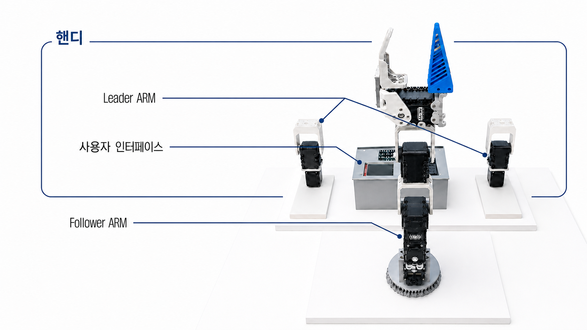
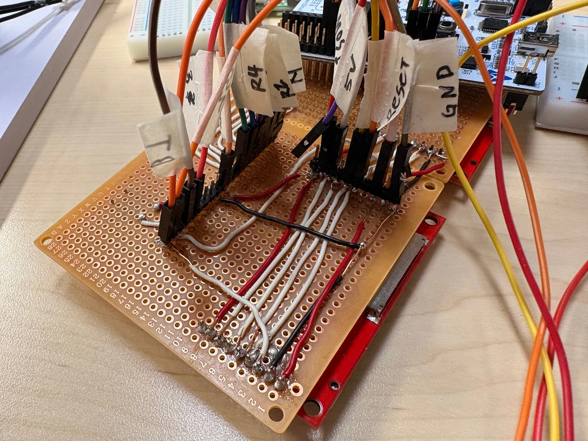
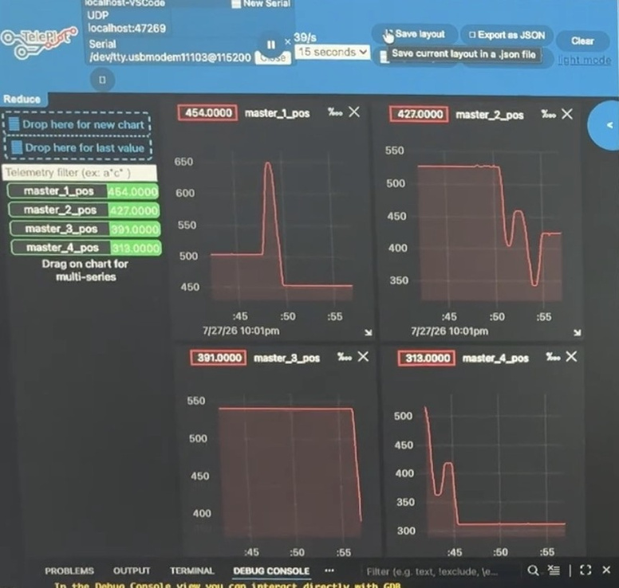
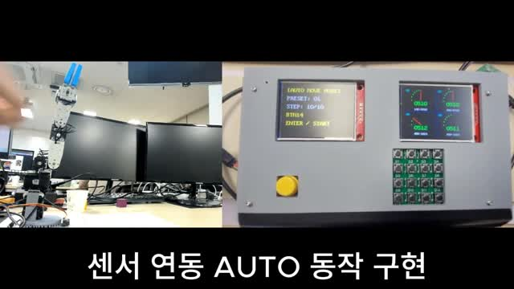

ARMIGO · 팀장 / 로봇팔 하드웨어·모터 제어
팀장으로 참여하고, 정재영 팀원과 4축 모터 제어·회로·외장 제작을 공동 담당했습니다.
전체 시스템
Leader Arm의 자세를 읽어 HC-05로 Follower Arm에 전달합니다. Flash에 저장한 자세를 반복 실행하는 티칭 시스템이며 UI·판단 로직은 팀원 담당입니다.


공동 구현 · 모터 버스와 보드 간 통신
배선을 줄이기 위해 Half-Duplex·Daisy Chain으로 AX-12A를 연결했습니다. USART1 1 Mbps 모터 버스와 USART6 115200 bps 보드 간 통신을 분리하고 위치·속도·상태를 다뤘습니다.
기판 배선 · 외장·그리퍼 제작
부품별 구역과 라벨을 정해 만능기판을 배선했습니다. Rhino 8 설계와 3D 프린팅으로 보드·배선을 보호하는 외장과 TPU 그리퍼를 제작했습니다.
위치 제어를 팀 티칭 기능과 통합
모터 위치 읽기·목표 위치 제어를 팀 펌웨어에 연결했습니다. Teleplot 위치 데이터와 티칭·자동 모드 시연으로 동작을 확인했습니다. Flash 저장·FreeRTOS·Mutex는 팀 통합 구성입니다.
팀장: 박종빈 / 하드웨어·모터 제어 공동 담당: 박종빈·정재영. 시연 영상은 팀 통합 결과입니다.
다중 모터 통신 실패를 해결한 과정
모터 수에 따라 달라지는 통신 실패를 회로·수신 방식·UART 설정으로 나누어 해결했습니다.


01 · 모터 2개는 동작, 3개부터 통신 실패
문제 모터 수가 늘면 송·수신이 불안정했습니다. 조치 Pull-up 구성을 검토하고 외부 4.7 kΩ을 적용했습니다. 확인 변경 후 다중 모터 동작을 확인했습니다.
02 · Polling 대기를 인터럽트 수신으로 변경
조치 송신 완료 콜백에서 Half-Duplex를 RX로 전환하고 인터럽트 수신을 시작하도록 구성했습니다. 확인 헤더·ID·길이·체크섬을 검사한 응답에서 위치값을 반영합니다. 위치 읽기·콜백 코드 ↗
03 · UART 설정과 실제 위치 데이터 확인
조치 RCC·UART 설정과 HC-05 Master·Slave 역할을 수정했습니다. 확인 Teleplot 위치 그래프와 티칭·자동 모드 시연으로 통합 동작을 확인했습니다.개선 전후 지연·손실률의 정량 수치는 측정 기록이 없습니다.